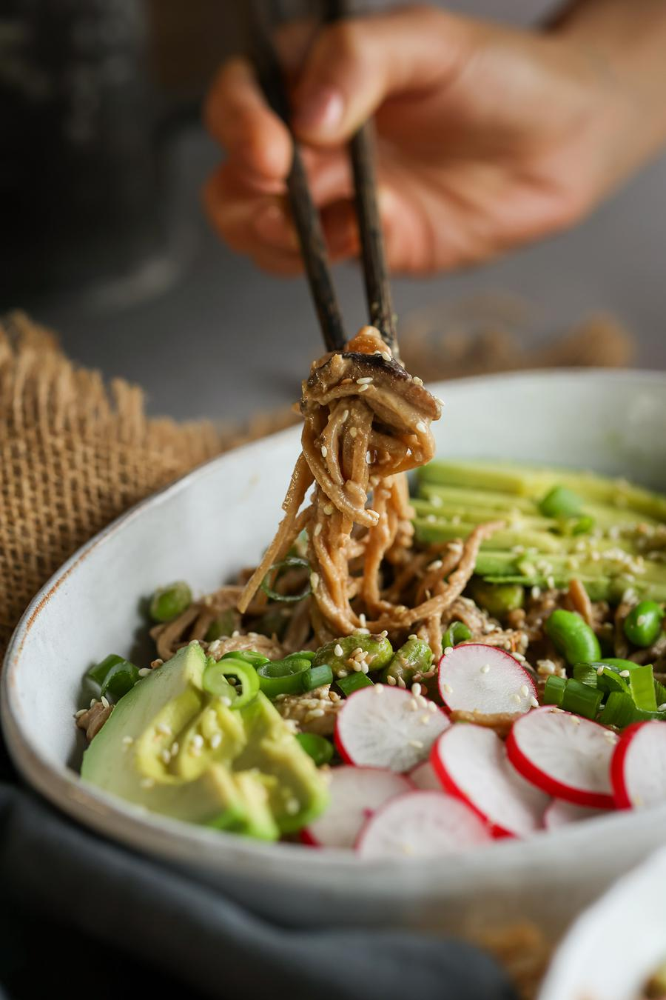

Ingredients
- 6.3 oz (180 g) dry soba noodles
- 4.9 oz (140 g) shiitake mushrooms, thinly sliced
- 1½ cups (225 g) frozen shelled edamame beans, thawed
- 1 avocado, sliced
- 6 small raw radishes, sliced (optional)
- 1 stalk green onion, thinly sliced
- 1 Tbsp (9 g) toasted sesame seeds
- ⅓ cup (80 mL) rice vinegar
- ¼ cup (60 mL) tahini
- 3 Tbsp (45 mL) white miso paste
- 2 Tbsp (30 mL) dark soy sauce
- 2 cloves garlic, crushed
- 2 tsp (10 mL) sesame oil
- 2 tsp (10 mL) maple syrup
- 1 tsp (2 g) freshly grated ginger
Steps
- In a mason jar, mix together the rice vinegar*, tahini, miso paste, soy sauce, garlic, sesame oil, maple syrup, and ginger.
- In a saucepan, cook the soba noodles according to the package instructions, then drain. For us, this took about 5 minutes.
- Meanwhile, add the oil to a large pan on high heat. When hot, add in the mushrooms and edamame beans and cook until softened, about 5 minutes.
- Then add the soba noodles, and dressing. Let everything heat through.
- Divide the noodles between your bowls, and top with sliced avocado, radishes, green onions, and sesame seeds. Enjoy!